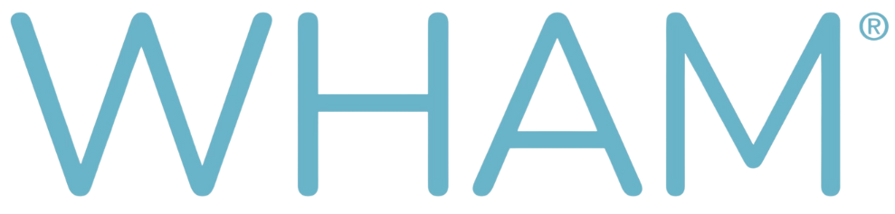
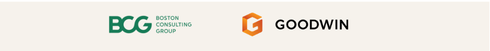

Trouble seeing the form? Open it in a new tab.
ABOUT WHAM: WHAMNOW.ORG

Invites you to
JP Morgan Healthcare Conference
Join leading researchers, investors, and strategics to explore how sex-based science is reshaping medicine, advancing longevity, and driving market growth—with insights from the release of the 2027 WHAM Report.
In partnership with

Trouble seeing the form? Open it in a new tab.
ABOUT WHAM: WHAMNOW.ORG